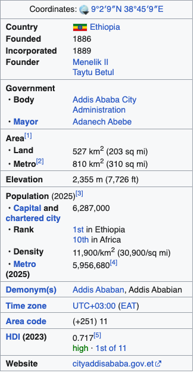
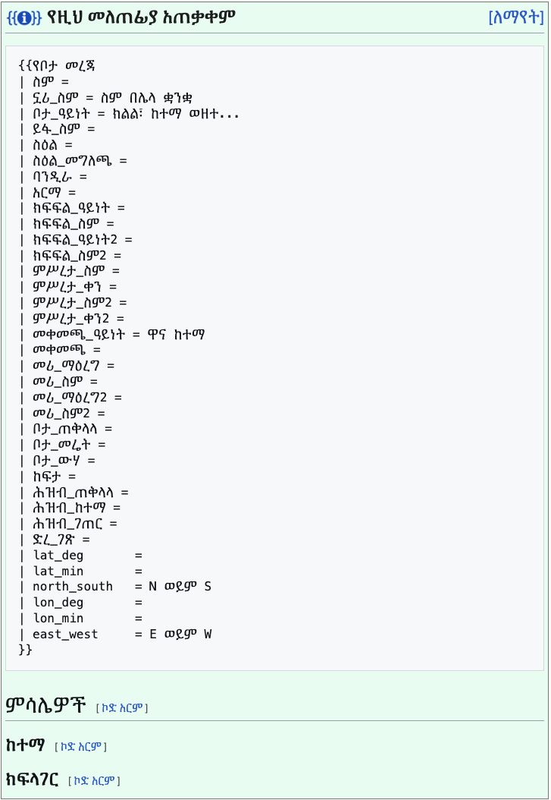
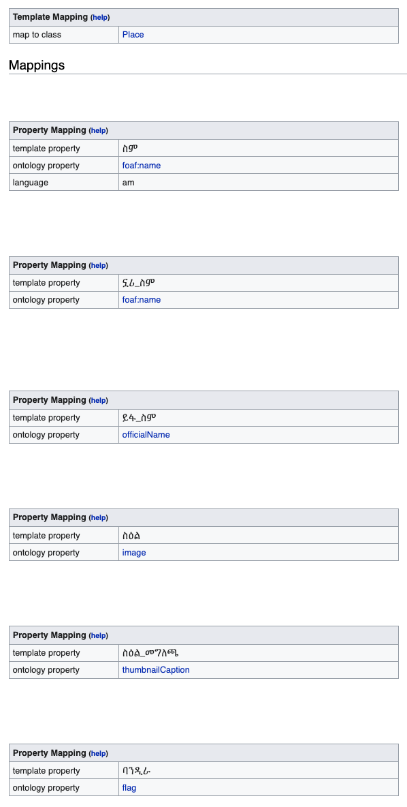
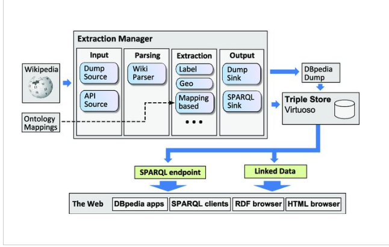

Amharic → DBpedia Mapping
This app maps Amharic Wikipedia infobox fields to the English DBpedia ontology.
Paste a Wikipedia template link, the app suggests matching properties, and after
you review and approve them, the mapping is published to
mappings.dbpedia.org.
What is an infobox?
An infobox is the summary box shown at the top of a Wikipedia
article that presents an entity's key facts as field = value pairs. For
example, the Addis Ababa article's infobox lists its country, founding year,
population, area, elevation, time zone, and more.

field = value pairs.
Every infobox is produced by a Wikipedia template. On Amharic Wikipedia, places such as cities use the መለጠፊያ:የቦታ_መረጃ (Place) template, which declares the field names an article can fill in:

ስም, ስዕል, ባንዲራ, …) are what a mapping
assigns ontology properties to.
That template is mapped to the ontology on the DBpedia mappings wiki at
Mapping am:የቦታ_መረጃ, which declares that the template describes a Place and that, for
instance, the field ስም is foaf:name, ስዕል is
image, and ባንዲራ is flag.

Mapping am:የቦታ መረጃ): mapToClass =
Place, with each template property mapped to an ontology property.
With that mapping in place, the DBpedia extraction framework can read the infobox on every article that uses the template and extract its facts automatically — turning free-form wiki markup into structured data.
What is DBpedia mapping?
DBpedia is a structured knowledge base extracted from Wikipedia. It turns the information Wikipedia presents into machine-readable properties and classes, so the data can be searched, linked, and reused by other applications.
Wikipedia infobox field names differ by language — in Amharic they are written
ርዝመት, የተወለደበት_ዓመት. The DBpedia ontology, however, has a
single, unified set of properties written in English — length,
birthYear. A mapping is the rule that says "this
Amharic field corresponds to this ontology property."
A mapping connects two things:
-
Template → class: e.g. the template
መረጃሳጥን ድልድይmaps to theBridgeclass. -
Field → property: e.g. the field
ርዝመትmaps to thelengthproperty.
Without a mapping, Amharic Wikipedia infobox data is never extracted into DBpedia. So creating a mapping for each Amharic template contributes Amharic knowledge to the global semantic web.
How the DBpedia extraction framework works
The DBpedia extraction framework reads Wikipedia content, applies the ontology mappings described above, and emits structured facts. The pipeline looks like this:

In short: Wikipedia content (a dump or the live API) is read, the Wiki Parser turns the markup into a tree, and a set of extractors run over it — the mapping-based extractor is the one that uses the ontology mappings above to read infobox fields. The results are written out by the sinks to a DBpedia dump and a Virtuoso triple store, which are exposed to the web as a SPARQL endpoint and as Linked Data for DBpedia apps, SPARQL clients, and RDF/HTML browsers.
Why RDF — what's the point?
The extracted facts are stored as RDF (Resource Description
Framework) triples — each fact is a subject → predicate → object
statement, for example dbr:Addis_Ababa dbo:country dbr:Ethiopia. Storing
the data this way matters because it is:
- Machine-readable — applications can consume the facts directly instead of scraping human-readable pages.
- Linked and interoperable — every entity and property is a URI, so facts from different sources connect into one global graph (Linked Open Data).
- Queryable — you can ask precise questions with SPARQL, e.g. “every Ethiopian city with a population over one million.”
- Language-independent — Amharic infobox facts join the same graph as facts from every other language edition, under shared ontology properties.
Without this step, the knowledge inside Amharic infoboxes stays locked in human-readable pages. As RDF it becomes data that search engines, applications, and researchers can actually query and reuse.
How to use the app
There are three ways to provide input. Paste any of them into the chat box:
1. A Wikipedia template link
Paste a template page URL. For example:
https://am.wikipedia.org/wiki/መለጠፊያ:የምግብ_መረጃ
The app extracts the template's fields on its own and maps each one. This is the
best way to prepare a complete template.
2. Infobox wikitext
Paste the infobox wikitext directly:
{{Infobox bridge | ስም = ደደሳ ድልድይ | ርዝመት = 1,700 ሜትር}}
3. A single field name
To ask about just one field, type its name — e.g. አይካኦ_ኮድ — and the app
suggests the matching DBpedia property.
The steps the app runs
When you submit a template, the app performs these five steps:
- Fetch Wikipedia template የዊኪፔዲያ መለጠፊያን ማምጣት
- Extract template fields የመለጠፊያ መስኮችን ማውጣት
- Predict ontology properties የኦንቶሎጂ ባህርያትን መተንበይ
- Generate mapping XML የማዛመጃ XML ማመንጨት
- Save run record የሂደት መዝገብ ማስቀመጥ
Example result
After the steps, the app gives you a summary like this:
A total of 11 fields were mapped for the Currency class. The mappings
for የስዕል_ስፋት, የISO_ኮድ, ምልክት,
ተጠቃሚ_ሀገሮች, and የተዋወቀበት_ቀን were suggested by the AI
model and should be verified. There are 13 unmapped fields, such as
የISO_ቁጥር (closest suggestion: casNumber) and
ንዑስ_ሬሾ (closest suggestion: aircraftHelicopterTransport).
You can edit the table to adjust these mappings and then press Publish.
In the summary:
- Mapped fields — properties the app found with confidence.
- AI-proposed — guessed by the language model; verify before publishing.
- Unmapped fields — no matching property was found; the closest suggestion is shown for each.
How a mapping is created and built
Mappings live on the mappings.dbpedia.org wiki, each template having its
own Mapping am:<template_name> page. A mapping is written in the
MediaWiki {{TemplateMapping}} syntax:
{{TemplateMapping
| mapToClass = Bridge
| mappings =
{{PropertyMapping | templateProperty = ርዝመት | ontologyProperty = length }}
{{PropertyMapping | templateProperty = ስፋት | ontologyProperty = width }}
}}
In this syntax:
-
mapToClass— sets the ontology class the template represents (e.g.Bridge). -
PropertyMapping— maps one field to one property.templatePropertyis the Amharic field name andontologyPropertyis the matching DBpedia property.
Two ways to build a mapping
1. Manually — create the Mapping am: page on the
mappings.dbpedia.org wiki and write the
{{TemplateMapping}} syntax above by hand. This requires deep knowledge of
the DBpedia ontology properties.
2. With this app (recommended) — the app searches for and suggests
matching properties; after you review and correct them, pressing Publish writes the
{{TemplateMapping}} page for you. Follow these steps:
- Paste the template URL or the infobox wikitext into the chat box.
- Review the proposed mappings in the table — verify the AI-proposed ones in particular.
- Fix any wrong mapping; for unmapped fields, pick from the suggestions or search the ontology.
- When you are satisfied it is correct, press Publish.
Editing and publishing
Each result is one mapping card. Every infobox field is a row of the same table, and every DBpedia property in it is an editable box with an ontology search beside it. Your changes stay marked until you publish:
- Edited rows have an amber bar and show the model's original property, with a button to put it back (መልስ).
- Added rows have a green bar.
- Removed rows stay in the table, struck through, and can be restored.
- AI-proposed rows are outlined in amber; check them first.
- Unmapped fields are empty rows: pick a suggestion, search, or type a property.
The card header counts the changes (ረቂቅ · 1 ታርሟል), and ሁሉንም መልስ undoes them all. To fix the DBpedia class, set the ክፍል፦ ራስ-ሰር chip next to the send button before sending.
The chat is kept only in the current browser tab: a reload keeps it, closing the tab removes it, and ውይይቱን አጽዳ in the sidebar starts over (it asks first if some edits are unpublished).
Nothing is published automatically. Edit the mappings in the table, and once you
have confirmed they are correct, press Publish. Publishing writes directly to the
live mappings.dbpedia.org wiki, so it always shows a confirmation
dialog first. To publish, a MediaWiki bot account (bot username and bot password)
must be set in .env.